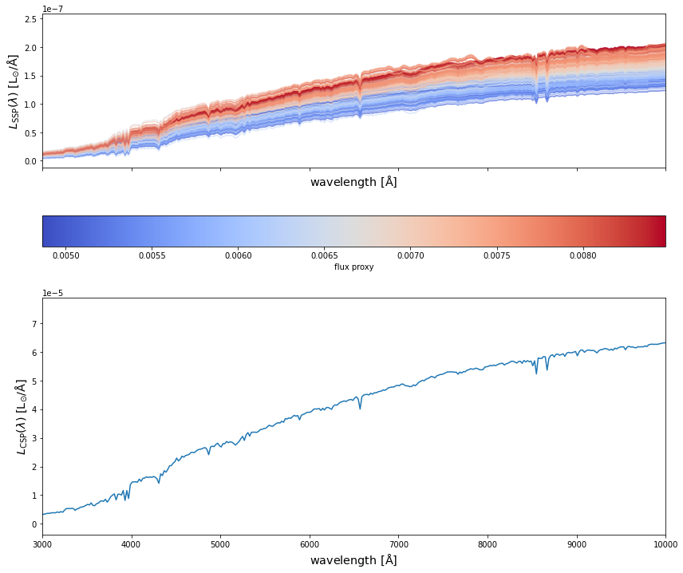
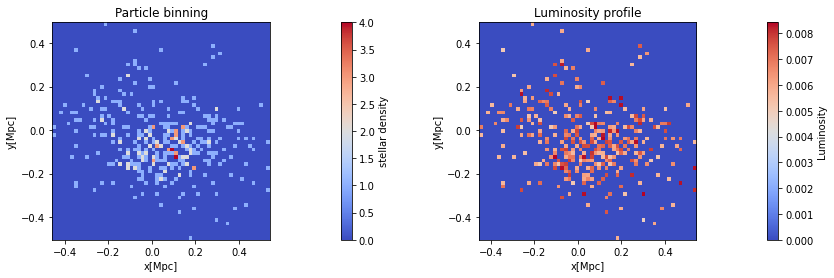
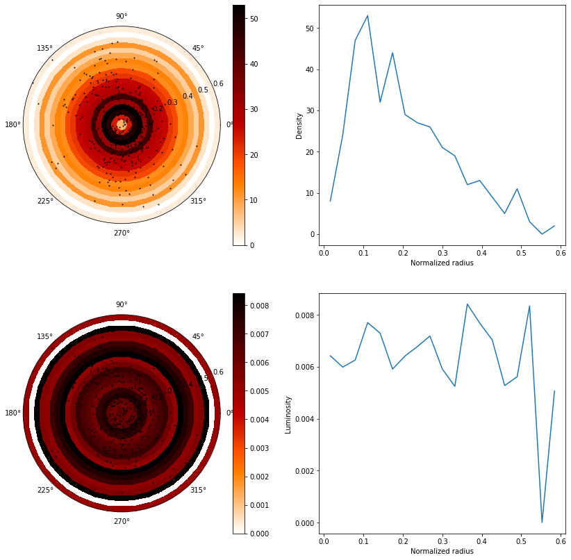
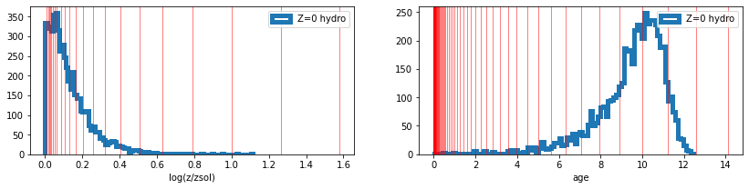

import hydro_colors as hc
from hydro_colors.load_sim_stellar_catalog import load_hacc_galaxy_data
from hydro_colors.calculate_csp import calc_fluxes_for_galaxy
from hydro_colors.load_sps_library import STELLAR_LIBRARY_DIRWaterColors
Painting Hydro simulations using Spectral Population Synthesis
Installation
pip install hydro_colorsSimple implementation to HACC hydro data
1. First we import the following modules of hydro_colors
2. Then the galaxy-star catalog from HACC is loaded
galaxy_star_catalog_file = '../hydro_colors/data/test_hacc_stellar_catalog/Gals_Z0_576.txt'
galaxy_tags, stellar_idx, _, _, _, x, y, z, _, _, _ = hc.load_sim_stellar_catalog.load_hacc_galaxy_data(galaxy_star_catalog_file)3. After selecting a unique galaxy tag, we calculate the SED. This is the rest-frame SED is due to spectral emission alone, and without dust attenuation.
galaxy_number = 4
unique_galaxy_tag = np.unique(galaxy_tags)[galaxy_number]
print('Number of galaxies: %d'%np.unique(galaxy_tags).shape[0])
spec_wave_ssp, spec_flux_ssp, spec_csp, flux_proxy, gal_stellar_mass = hc.calculate_csp.calc_fluxes_for_galaxy(galaxy_star_catalog_file,
unique_galaxy_tag,
STELLAR_LIBRARY_DIR)Number of galaxies: 10
Library shape: (22, 94, 1963)
Wavelength shape: (1963,)4. Finally, we plot SEDs from both SSPs and CSPs
fig, a = plt.subplots(2,1, figsize=(14, 12), sharex=True, sharey=False)
c_norm = mpl.colors.Normalize(vmin=np.min(flux_proxy), vmax=np.max(flux_proxy))
c_map = mpl.cm.coolwarm
s_map = mpl.cm.ScalarMappable(cmap=c_map, norm=c_norm)
s_map.set_array([])
for idx in range(spec_flux_ssp.shape[0]):
# spec_flux_ssp[idx] = spec_ssp(age_hydro[ssp_id], metal_hydro[ssp_id], mass[ssp_id])
a[0].plot(spec_wave_ssp, spec_flux_ssp[idx],
# color=s_map.to_rgba(np.log10(mass[ssp_id])),
color=s_map.to_rgba(flux_proxy[idx]),
alpha=0.5)
fig.colorbar(s_map, ax = a[0],
orientation = 'horizontal',
# label=r'stellar mass', pad=0.2)
label=r'flux proxy', pad=0.2)
#####################################################################
a[1].plot(spec_wave_ssp, spec_csp)
# a[0].set_ylim(1e-9, 1e-6)
# a[0].set_yscale('log')
# a[1].set_yscale('log')
# a[1].set_xscale('log')
a[1].set_xlim(3e3, 1e4)
a[0].set_xlabel(r'${\rm wavelength\ [\AA]}$', fontsize = 'x-large')
a[1].set_xlabel(r'${\rm wavelength\ [\AA]}$', fontsize = 'x-large')
a[0].set_ylabel(r'$L_{\rm SSP}(\lambda)\ {\rm [L_{\odot}/\AA]}$', fontsize = 'x-large')
a[1].set_ylabel(r'$L_{\rm CSP}(\lambda)\ {\rm [L_{\odot}/\AA]}$', fontsize = 'x-large')
plt.show()
One can also find luminosity profiles for the simulated galaxies
1. First we project the luminosity on to grids
gal_tag_cond = np.where(galaxy_tags == unique_galaxy_tag)
# x_centered_scaled = (x[gal_tag_cond] - np.min(x[gal_tag_cond]))/(np.max(x[gal_tag_cond]) - np.min(x[gal_tag_cond]))
# y_centered_scaled = (y[gal_tag_cond] - np.min(y[gal_tag_cond]))/(np.max(y[gal_tag_cond]) - np.min(y[gal_tag_cond]))
x_centered_scaled = (x[gal_tag_cond] - np.mean(x[gal_tag_cond]))/(np.max(x[gal_tag_cond]) - np.min(x[gal_tag_cond]))
y_centered_scaled = (y[gal_tag_cond] - np.mean(y[gal_tag_cond]))/(np.max(y[gal_tag_cond]) - np.min(y[gal_tag_cond]))
nbins = 60
xedges = np.linspace(x_centered_scaled.min(), x_centered_scaled.max(), nbins)
yedges = np.linspace(y_centered_scaled.min(), y_centered_scaled.max(), nbins)
H, xedges, yedges, binnumber = stats.binned_statistic_2d(x_centered_scaled, y_centered_scaled,
None, 'count', bins=[xedges, yedges],
expand_binnumbers=True)
grid_flux = np.zeros_like(H)
for idx, ssp_id in enumerate(gal_tag_cond[0]):
grid_flux[binnumber[:, idx][0]-1, binnumber[:, idx][1]-1] = np.trapz(spec_flux_ssp[idx], spec_wave_ssp)2. Next we plot the stellar density and luminosity profiles
fig, ax = plt.subplots(1, 2, figsize=(14, 4))
c_norm = mpl.colors.Normalize(vmin=1, vmax=np.max(H))
c_map = mpl.cm.coolwarm
ax[0].set_title('Particle binning')
im = ax[0].imshow(H, interpolation='nearest', origin='lower',
extent=[xedges[0], xedges[-1], yedges[0], yedges[-1]],
cmap=c_map)
fig.colorbar(im, ax = ax[0],
orientation = 'vertical',
# label=r'stellar mass', pad=0.2)
label=r'stellar density', pad=0.2)
# Normalize the array vals so they can be mapped to a color
c_norm = mpl.colors.Normalize(vmin=np.min(grid_flux.min()), vmax=np.max(grid_flux))
c_norm = mpl.colors.Normalize(vmin=0.004, vmax=np.max(grid_flux))
# # Pick a colormap
# c_map = mpl.cm.magma
ax[1].set_title('Luminosity profile')
im = ax[1].imshow(grid_flux, interpolation='nearest', origin='lower', extent=[xedges[0], xedges[-1], yedges[0], yedges[-1]], cmap=c_map)
# Adding the colorbar
fig.colorbar(im, ax = ax[1],
orientation = 'vertical',
# label=r'stellar mass', pad=0.2)
label=r'Luminosity', pad=0.2)
ax[0].set_xlabel('x[Mpc]')
ax[0].set_ylabel('y[Mpc]')
ax[1].set_xlabel('x[Mpc]')
ax[1].set_ylabel('y[Mpc]')
ax[0].set_aspect('equal', adjustable='box')
ax[1].set_aspect('equal', adjustable='box')
plt.show()
Radial mass profile of the galaxy
def cart2pol(x, y):
rho = np.sqrt(x**2 + y**2)
phi = np.arctan2(y, x)
return(rho, phi)
radius, azimut = cart2pol(x_centered_scaled, y_centered_scaled)
azimut += np.pi
# define binning
rbins = np.linspace(0,radius.max(), 20)
abins = np.linspace(0,2*np.pi, 2)
subdivs = 40
abins2 = np.linspace(0, 2 * np.pi, (len(abins) - 1) * subdivs + 1)
#calculate histogram for mass density
# hist, _, _ = np.histogram2d(azimut, radius, bins=(abins, rbins))
hist, _, _, binnumbers = stats.binned_statistic_2d(azimut, radius,
None, 'count', bins=[abins, rbins],
expand_binnumbers=True)
# Luminosity
grid_flux_polar = np.zeros_like(hist)
for idx, ssp_id in enumerate(gal_tag_cond[0]):
grid_flux_polar[binnumbers[:, idx][0]-1, binnumbers[:, idx][1]-1] = np.trapz(spec_flux_ssp[idx], spec_wave_ssp)
A, R = np.meshgrid(abins, rbins)
A2, R2 = np.meshgrid(abins2, rbins)
# plot
fig = plt.figure(figsize=(14 , 14))
ax0 = plt.subplot(221, projection="polar")
ax1 = plt.subplot(222)
# pc = ax.pcolormesh(A, R, hist.T, cmap="magma_r")
pc2 = ax0.pcolormesh(A2, R2, np.repeat(hist.T, subdivs, axis=1), cmap='gist_heat_r')
pc3 = ax0.scatter(azimut, radius, alpha=1, marker='o', s=1, color='k')
fig.colorbar(pc2, ax=ax0)
ax1.plot(0.5*(rbins[1:] + rbins[:-1]), np.sum(hist, axis=0));
ax1.set_xlabel('Normalized radius')
ax1.set_ylabel('Density')
ax2 = plt.subplot(223, projection="polar")
ax3 = plt.subplot(224)
# pc = ax.pcolormesh(A, R, hist.T, cmap="magma_r")
pc3 = ax2.pcolormesh(A2, R2, np.repeat(grid_flux_polar.T, subdivs, axis=1), cmap='gist_heat_r')
pc4 = ax2.scatter(azimut, radius, alpha=1, marker='o', s=1, color='k')
fig.colorbar(pc3, ax=ax2)
ax3.plot(0.5*(rbins[1:] + rbins[:-1]), np.sum(grid_flux_polar, axis=0));
ax3.set_xlabel('Normalized radius')
ax3.set_ylabel('Luminosity')/tmp/ipykernel_2275932/3123066502.py:45: MatplotlibDeprecationWarning: Auto-removal of grids by pcolor() and pcolormesh() is deprecated since 3.5 and will be removed two minor releases later; please call grid(False) first.
pc2 = ax0.pcolormesh(A2, R2, np.repeat(hist.T, subdivs, axis=1), cmap='gist_heat_r')
/tmp/ipykernel_2275932/3123066502.py:58: MatplotlibDeprecationWarning: Auto-removal of grids by pcolor() and pcolormesh() is deprecated since 3.5 and will be removed two minor releases later; please call grid(False) first.
pc3 = ax2.pcolormesh(A2, R2, np.repeat(grid_flux_polar.T, subdivs, axis=1), cmap='gist_heat_r')Text(0, 0.5, 'Luminosity')
Under the hood
from hydro_colors.load_sps_library import *
from hydro_colors.load_sim_stellar_catalog import *spec_flux, spec_wave = load_fsps_spectral_library()
age_fsps_gyr, Z_padova_fsps = load_fsps_age_metallicity()
gal_tag, stellar_idx, metal_hydro, mass, age_hydro, x, y, z, vx, vy, vz = load_hacc_galaxy_data()
f, a = plt.subplots(1,2, figsize=(14, 3))
a[0].hist(metal_hydro, bins = 100, histtype='step', lw=5, label='Z=0 hydro');
[a[0].axvline(_x, linewidth=1, color='r', alpha=0.5) for _x in Z_padova_fsps];
a[0].legend()
a[0].set_xlabel('log(z/zsol)')
a[1].hist(age_hydro, bins = 100, histtype='step', lw=5, label='Z=0 hydro');
[a[1].axvline(_x, linewidth=1, color='r', alpha=0.5) for _x in age_fsps_gyr];
a[1].legend()
a[1].set_xlabel('age')
plt.show()Library shape: (22, 94, 1963)
Wavelength shape: (1963,)